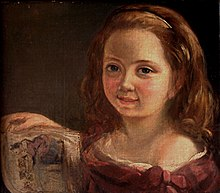
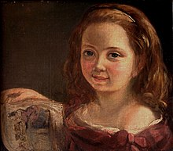
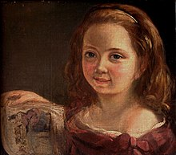

PORTFOLIO
 



Ada Byron was the only legitimate child of poet Lord Byron and Lady Byron.[5] All of Byron's other children were born out of wedlock to other women.[6] Byron separated from his wife a month after Ada was born and left England forever. Four months later, he commemorated the parting in a poem that begins, "Is thy face like thy mother's my fair child! ADA! sole daughter of my house and heart?"[7] He died in Greece when Ada was eight. Her mother remained bitter and promoted Ada's interest in mathematics and logic in an effort to prevent her from developing her father's perceived insanity. Despite this, Ada remained interested in him, naming her two sons Byron and Gordon. Upon her death, she was buried next to him at her request. Although often ill in her childhood, Ada pursued her studies assiduously. She married William King in 1835. King was made Earl of Lovelace in 1838, Ada thereby becoming Countess of Lovelace.
Her educational and social exploits brought her into contact with scientists such as Andrew Crosse, Charles Babbage, Sir David Brewster, Charles Wheatstone, Michael Faraday, and the author Charles Dickens, contacts which she used to further her education. Ada described her approach as "poetical science"[8] and herself as an "Analyst (& Metaphysician)".[9]
When she was a teenager (18), her mathematical talents led her to a long working relationship and friendship with fellow British mathematician Charles Babbage, who is known as "the father of computers". She was in particular interested in Babbage's work on the Analytical Engine. Lovelace first met him in June 1833, through their mutual friend, and her private tutor, Mary Somerville.
Between 1842 and 1843, Ada translated an article by Italian military engineer Luigi Menabrea about the Analytical Engine, supplementing it with an elaborate set of notes, simply called "Notes". Lovelace's notes are important in the early history of computers, containing what many consider to be the first computer program—that is, an algorithm designed to be carried out by a machine. Other historians reject this perspective and point out that Babbage's personal notes from the years 1836/1837 contain the first programs for the engine.[10] She also developed a vision of the capability of computers to go beyond mere calculating or number-crunching, while many others, including Babbage himself, focused only on those capabilities.[11] Her mindset of "poetical science" led her to ask questions about the Analytical Engine (as shown in her notes) examining how individuals and society relate to technology as a collaborative tool.[6]

In 1840, Babbage was invited to give a seminar at the University of Turin about his Analytical Engine. Luigi Menabrea, a young Italian engineer and the future Prime Minister of Italy, transcribed Babbage's lecture into French, and this transcript was subsequently published in the Bibliothèque universelle de Genève in October 1842. Babbage's friend Charles Wheatstone commissioned Ada Lovelace to translate Menabrea's paper into English. She then augmented the paper with notes, which were added to the translation. Ada Lovelace spent the better part of a year doing this, assisted with input from Babbage. These notes, which are more extensive than Menabrea's paper, were then published in the September 1843 edition of Taylor's Scientific Memoirs under the initialism AAL.[72]
[The Analytical Engine] might act upon other things besides number, were objects found whose mutual fundamental relations could be expressed by those of the abstract science of operations, and which should be also susceptible of adaptations to the action of the operating notation and mechanism of the engine...Supposing, for instance, that the fundamental relations of pitched sounds in the science of harmony and of musical composition were susceptible of such expression and adaptations, the engine might compose elaborate and scientific pieces of music of any degree of complexity or extent.[
Lovelace recognized the difference between the details of the computing mechanism, as covered in a 1934 article on the Difference Engine,[84] and the logical structure of the Analytical Engine, on which the article she was reviewing dwelt. She noted that different specialists might be required in each area.